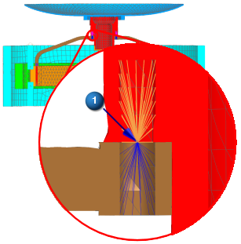
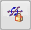
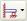
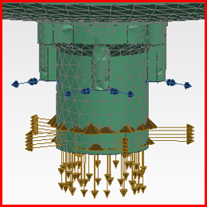

Define fixed boundary DOFs
The bolted connection between the optics subassembly and the gimbal is modeled using point-to-face RBE2 spider elements. The center nodes are joined to similar spider elements in the gimbal support using very stiff spring elements (1).

Define a Fixed Boundary Degrees of Freedom constraint at the four center nodes of the spider elements. To make selection easier, these four nodes have been stored in a group in the FEM file. Reference this group to select the nodes.
 Fixed Boundary Degrees of Freedom (Loads and Conditions group→ Constraint Type list)
-
 Group Reference
Group Reference -
Group list
boundary_nodes::OpticalSupport_fem1

-
 All On
All On -
OK
